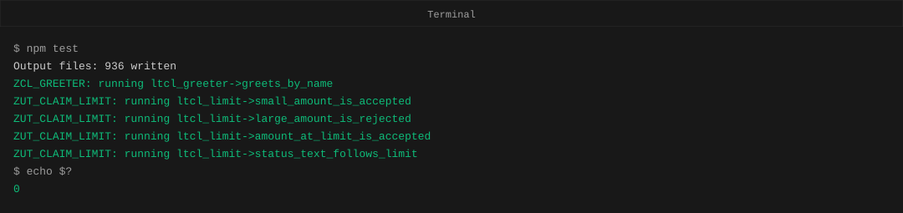
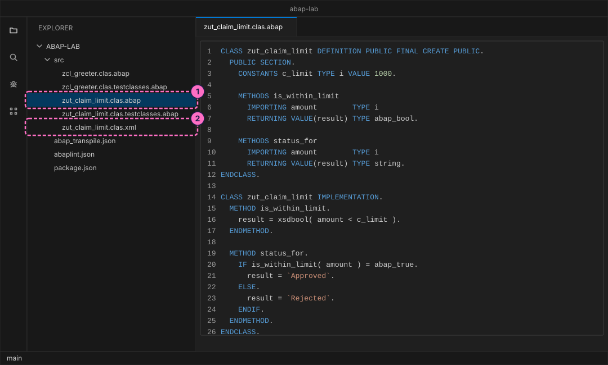
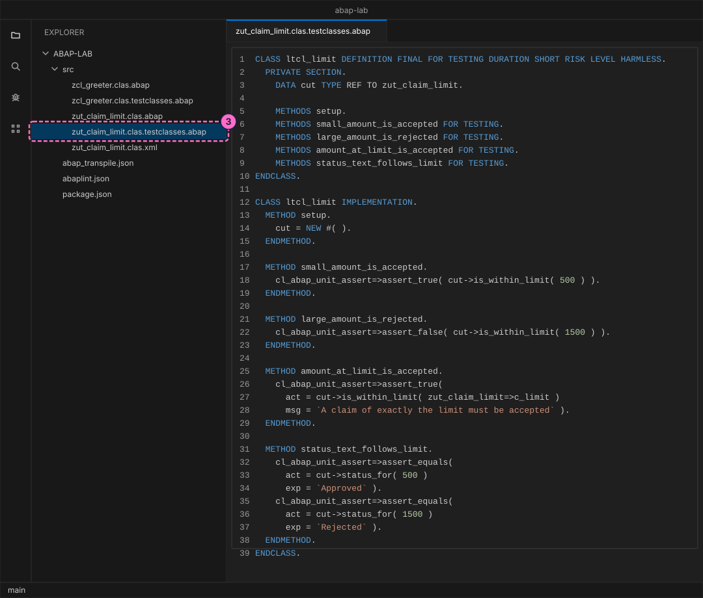
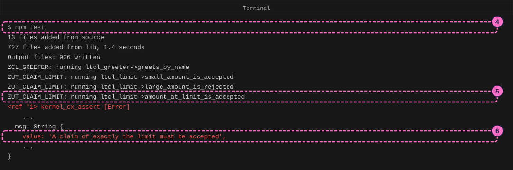
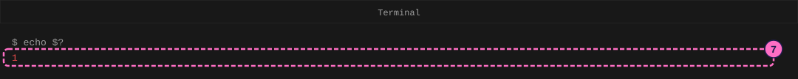
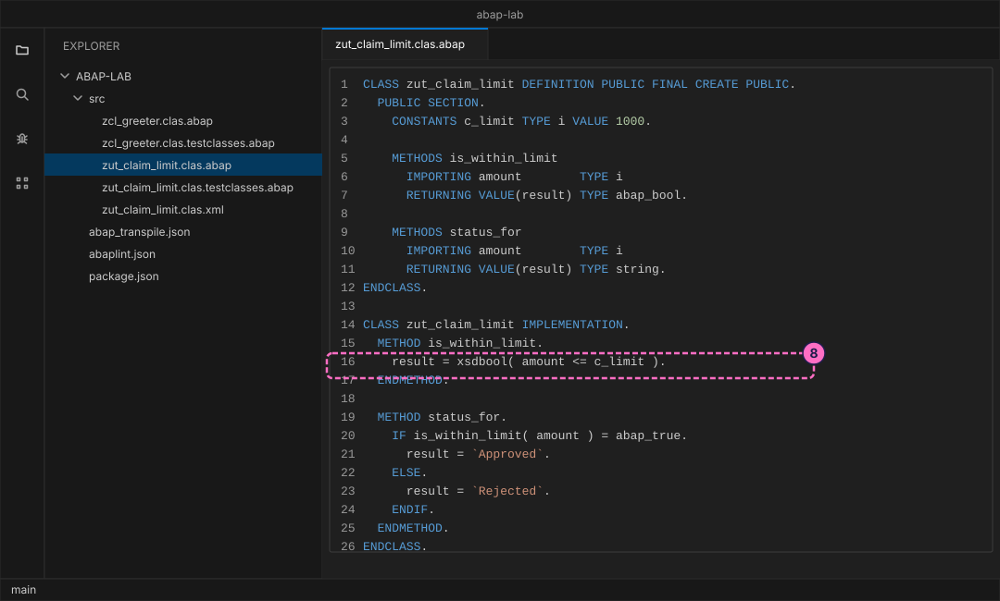

ABAP Guide: Write ABAP Unit Tests
|
This content was generated with the assistance of AI and should be verified against the official documentation before being relied on in production. |
Checked on 2026-11-13 against open-abap 2.14.30 (the abaplint transpiler and runtime, open-abap-core a9acc41), abaplint 2.120.103 and Node.js 24.21.
What you build
You write a small class named zut_claim_limit that decides whether an expense claim is within a spending limit of 1000, and a local test class that checks it with four tests. The first run of the tests fails on purpose: the class compares with < where the rule needs <=, so a claim of exactly 1000 is rejected. You read the failure, find the line, fix it and run the tests again until all of them pass. The finished state is the pair of files that the ABAP lab keeps, so the lab’s own npm test passes.
The playground is open-abap, a community open-source project, not SAP software. It runs ABAP Unit tests with its own copy of the class cl_abap_unit_assert, and it prints a failure differently from an SAP system: where ABAP Development Tools show a list of tests with a red marker, the playground prints a JavaScript error and ends with exit code 1. The rules for writing tests are the same.

Before you start
-
No account is needed: Node.js, the abaplint tools and open-abap install from the public npm registry without signing in. The licences you accept by installing (MIT for the abaplint packages) are listed in the README of the ABAP lab.
-
Set up the lab first, with the guide Set Up a Local ABAP Playground: the folder
abap-labwithnpm installdone and an editor such as Visual Studio Code open on it. The guide ABAP Guide: Your First ABAP Program explains the two-file layout of an object (.abapand.xml) and how a transpile error looks; it is worth reading first. -
The lab already holds the finished files of this guide in
modules/ROOT/examples/abap-lab/src/. Type them yourself rather than copying them, so that you meet the failure on your own screen. -
Read ABAP Unit and Test Doubles for the ideas behind this guide and Classes and Objects for classes and methods. This guide needs only the basics: a unit test is a small program that calls your code with input you choose and checks the result.
-
The commands
npm testandecho $?run in a Unix-style shell such as bash or zsh. The figures are drawings of the editor and the terminal, not screenshots. A highlighted box with a number marks the file, line or output of the step with the same number.
Steps
A test of a global class lives in the same development object as the class. In the abapGit layout of the lab that is a third file next to <name>.clas.abap and <name>.clas.xml: <name>.clas.testclasses.abap. On an SAP system the same file is the tab Test Classes of the class in ABAP Development Tools. The source of a test class is not part of the production code, production code cannot address it, and it is not generated in production systems.
Write the class under test
-
In the
srcfolder, createsrc/zut_claim_limit.clas.abap. The class has a constantc_limitwith the value 1000 and two methods:is_within_limitanswersabap_trueorabap_false, andstatus_forturns that answer into the textApprovedorRejected. The listing shows the finished file. For now write line 16 with a slip that looks harmless:result = xsdbool( amount < c_limit )., with<where the listing has<=. The tests will find it.CLASS zut_claim_limit DEFINITION PUBLIC FINAL CREATE PUBLIC. PUBLIC SECTION. CONSTANTS c_limit TYPE i VALUE 1000. METHODS is_within_limit IMPORTING amount TYPE i RETURNING VALUE(result) TYPE abap_bool. METHODS status_for IMPORTING amount TYPE i RETURNING VALUE(result) TYPE string. ENDCLASS. CLASS zut_claim_limit IMPLEMENTATION. METHOD is_within_limit. result = xsdbool( amount <= c_limit ). ENDMETHOD. METHOD status_for. IF is_within_limit( amount ) = abap_true. result = `Approved`. ELSE. result = `Rejected`. ENDIF. ENDMETHOD. ENDCLASS. -
Create the attribute file
src/zut_claim_limit.clas.xml. It has the same layout as the attribute file of the greeter class, with the class name and the description changed, and it includes the lineCLSCCINCLthat the greeter class also has because it also has a test file.<?xml version="1.0" encoding="utf-8"?> <abapGit version="v1.0.0" serializer="LCL_OBJECT_CLAS" serializer_version="v1.0.0"> <asx:abap xmlns:asx="http://www.sap.com/abapxml" version="1.0"> <asx:values> <VSEOCLASS> <CLSNAME>ZUT_CLAIM_LIMIT</CLSNAME> <LANGU>E</LANGU> <DESCRIPT>Claim limit</DESCRIPT> <STATE>1</STATE> <CLSCCINCL>X</CLSCCINCL> <FIXPT>X</FIXPT> <UNICODE>X</UNICODE> </VSEOCLASS> </asx:values> </asx:abap> </abapGit>
Write the test class
-
Create
src/zut_claim_limit.clas.testclasses.abap. The additionFOR TESTINGmakesltcl_limita test class, andDURATION SHORT RISK LEVEL HARMLESSsays that the test is quick and changes no data. Each method declaredFOR TESTINGis one test. The methodsetupis part of the fixture: it runs before every test method and gives each test a new object in the variablecut(class under test), so one test cannot disturb another. Inside a test,assert_true,assert_falseandassert_equalsofcl_abap_unit_assertcompare the result with what you expect. The optional parametermsgis the text printed when a check fails, andactandexphold the actual and the expected value. A test that raises no failure passes.CLASS ltcl_limit DEFINITION FINAL FOR TESTING DURATION SHORT RISK LEVEL HARMLESS. PRIVATE SECTION. DATA cut TYPE REF TO zut_claim_limit. METHODS setup. METHODS small_amount_is_accepted FOR TESTING. METHODS large_amount_is_rejected FOR TESTING. METHODS amount_at_limit_is_accepted FOR TESTING. METHODS status_text_follows_limit FOR TESTING. ENDCLASS. CLASS ltcl_limit IMPLEMENTATION. METHOD setup. cut = NEW #( ). ENDMETHOD. METHOD small_amount_is_accepted. cl_abap_unit_assert=>assert_true( cut->is_within_limit( 500 ) ). ENDMETHOD. METHOD large_amount_is_rejected. cl_abap_unit_assert=>assert_false( cut->is_within_limit( 1500 ) ). ENDMETHOD. METHOD amount_at_limit_is_accepted. cl_abap_unit_assert=>assert_true( act = cut->is_within_limit( zut_claim_limit=>c_limit ) msg = `A claim of exactly the limit must be accepted` ). ENDMETHOD. METHOD status_text_follows_limit. cl_abap_unit_assert=>assert_equals( act = cut->status_for( 500 ) exp = `Approved` ). cl_abap_unit_assert=>assert_equals( act = cut->status_for( 1500 ) exp = `Rejected` ). ENDMETHOD. ENDCLASS.Source: CLASS, FOR TESTING (ABAP Keyword Documentation) and METHODS, FOR TESTING (ABAP Keyword Documentation)

Run the tests and read the failure
-
In the terminal, in the
abap-labfolder, run the script that transpiles all sources and then runs every test:npm test -
Look at the lines that start with a class name, such as
ZUT_CLAIM_LIMIT: running ltcl_limit->small_amount_is_accepted. The runner prints one line when a test starts, so the last of these lines is the test that failed: hereamount_at_limit_is_accepted. The two tests before it passed, and the teststatus_text_follows_limitnever started, because the run stops at the first failure. The lab’s greeter test runs first. -
Read the block that follows. It begins with
kernel_cx_assert [Error], the exception the assertion raised, and a stack of JavaScript lines that you can ignore. Further down,msgholds the text that you gave the assertion:A claim of exactly the limit must be accepted. That sentence is why a message is worth writing: it tells you which rule is broken without opening the test. The block is long, and the figure leaves out the lines marked with three dots and the lines that name files on the computer that ran it.
-
Ask the shell for the exit code of the run that just ended. A program reports success or failure to the shell as a number: 0 means success and anything else means failure. The failed run ended with 1. A build server uses this number to decide that a change must not be released.
echo $?
Fix the class and run again
-
Open
src/zut_claim_limit.clas.abapand change line 16 to the form of the listing in step 1:<becomes<=. The rule says a claim up to and including the limit is accepted, and the testamount_at_limit_is_acceptedwas the one that checked exactly that boundary. Save the file.
-
Run
npm testagain, thenecho $?. All five test lines appear (the greeter test and your four), no error follows, and the exit code is 0.
Check the result
npm test prints the Output files line and then five lines that start with ZCL_GREETER: running or ZUT_CLAIM_LIMIT: running, with no kernel_cx_assert after them, and echo $? prints 0. npm run lint prints abaplint: 0 issue(s) found followed by the number of files analyzed, which grows as the lab does.
Variations
-
In the test
status_text_follows_limit, changeRejectedtoDeclinedand runnpm test. The test now fails withactualholdingRejectedandexpectedholdingDeclined, the two values thatassert_equalscompared. Change it back. -
Add a fifth test method for an amount of 0 and decide first what you expect; then run the tests.
-
Give each assertion a
msg, as the boundary test does, and compare how a failure reads with and without it.
What can go wrong
| Symptom | Cause | Fix |
|---|---|---|
A block starting with |
An assertion failed. The last |
Read |
A test you wrote has no |
An earlier test failed first. The run stops at the first failure. |
Fix the failing test; the later tests then start. |
|
A method name in the test class is misspelled, so the transpile stops before anything runs. |
Open the file and line at the end of the message and correct the name. |
All tests pass although you broke the code |
You ran |
Run |
Where to go next
-
Next in this section: Check Code against Clean ABAP Rules, which uses abaplint to find problems that no test checks.
-
Reference: ABAP Unit and Test Doubles, for the fixture methods
class_setupandteardownand for test doubles. They run on an SAP system, and this guide did not try them in the playground. -
Reference: Classes and Objects.